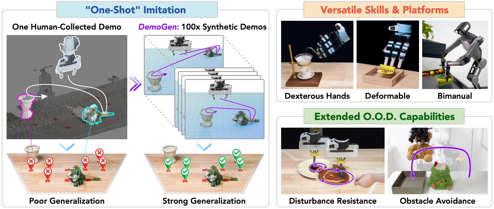

Yixuan Wang | 王怿轩I am a second-year Master of Science in Computer Science student at the University of Illinois Urbana-Champaign (UIUC), advised by Prof. Wenzhen Yuan. My research interests include tactile sensing and robotic manipulation, with a focus on contact-rich and dexterous manipulation. Previously, I received a dual bachelor's degree (B.S. in Mathematics and Physics and B.E. in Mechanical Engineering) from Tsinghua University, where I worked with Huazhe Xu on visuomotor policy learning. I was also fortunate to be mentored by Yao Jiang, who introduced me to research. |
Publications
* denotes equal contribution


SynData4CV Workshop, CVPR, 2025 Best Long Paper
Robot Learning Workshop, ICLR, 2025 Oral
@article{xue2025demogen,
title={DemoGen: Synthetic Demonstration Generation for Data-Efficient Visuomotor Policy Learning},
author={Xue, Zhengrong and Deng, Shuying and Chen, Zhenyang and Wang, Yixuan and Yuan, Zhecheng and Xu, Huazhe},
journal={arXiv preprint arXiv:2502.16932},
year={2025}
}
Working Experience
Miscellaneous
- I am a passionate tennis player. I have been training and playing tennis since I was 10. If you'd like to hit sometime, feel free to reach out!